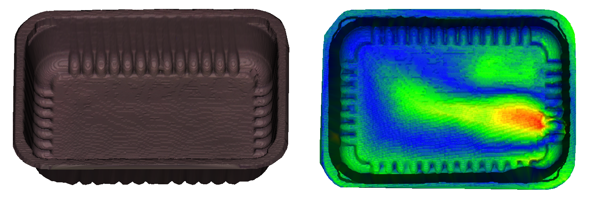

Vision2Reuse
Reusable packaging is an important pillar in the strategy towards more circular packaging at both European and Flemish level (Green Deal ‘Anders Verpakt’). Within Europe, it is stated that by 2030 all packaging must be recyclable or reusable. Fevia has sharpened this target with a deadline of 2025. To stimulate the use of reusable packaging, many research and implementation questions still need to be answered, such as accurate and automated detection methods for defects and/or contamination. This is of course very important to guarantee consumer safety as well as the economic viability of the business model.
The goal of the VISION2REUSE project is to demonstrate the potential of smart cameras for the automatic monitoring of the quality of reusable packaging in the food and packaging industry. Based on these camera technologies and state-of-the-art machine learning, it will be measured in an accurate and fast way whether the packaging material in question is still suitable for a new reuse cycle or whether it should go to a dedicated end-of-life stream (e.g. recycling).
Our task in the project is to develop AI-based anomaly detection techniques able to automatically detect both contamination as well as deformations. Contamination can be detected in the visual domain whereas deformations require a 3D reconstruction and an associated analysis.
 Figure 1: Package that is in a good state and thus reusable (left) and a deformed package unfit for reause (right). Image on the right shows the difference between the 3D reconstruction of a proper box and a deformed box.